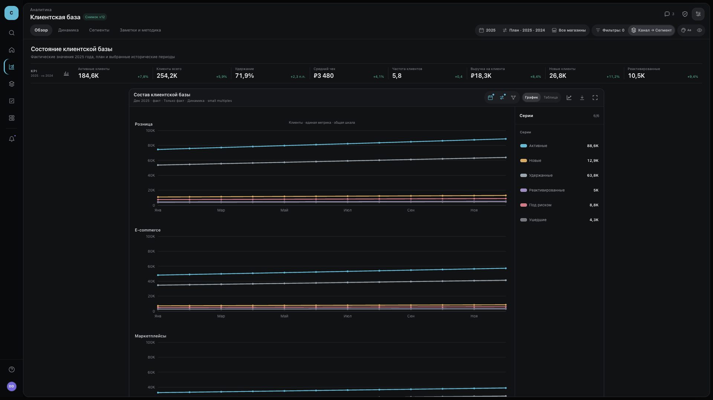
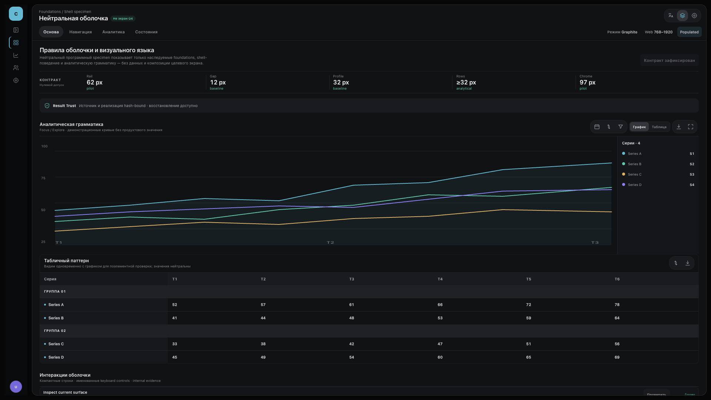
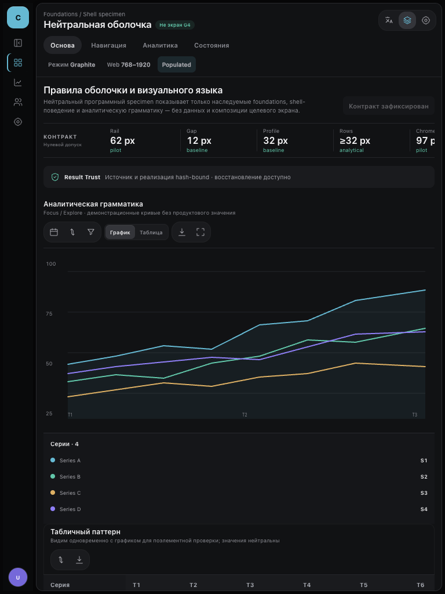
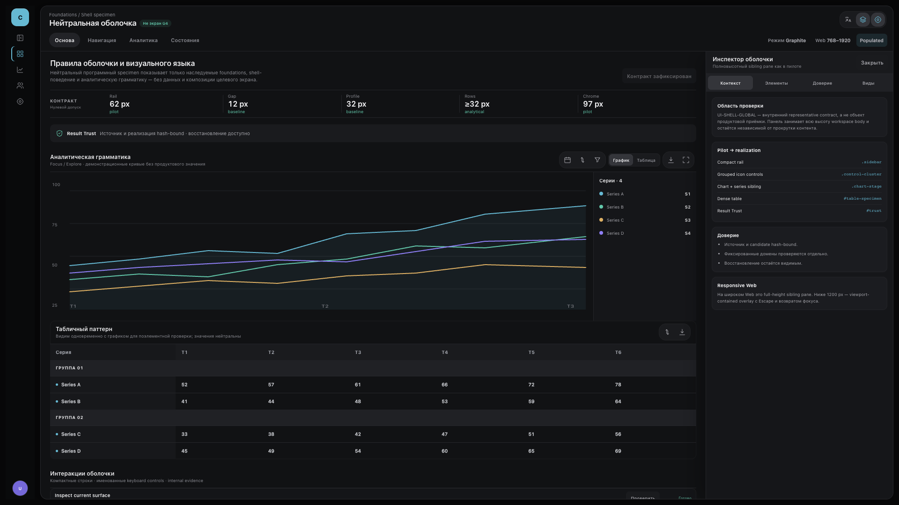

G3 · Foundations & shell
Принятый пилот сопоставлен с нейтральным программным specimen: Graphite-поверхности, cyan-акцент, компактный rail и chrome, tabs/filters, KPI-ритм, аналитические линии, внешний series panel и устойчивое responsive shell-поведение. Это не новый целевой экран и не пересборка пилота.
Machine gate · passed
Вы принимаете не экран и не его продуктовые данные. Вы принимаете правила визуального языка и оболочки, извлечённые из пилота и зафиксированные для последующего проектирования экранов G4.
4 / 4Responsive-Web anchors
9 / 9Детальные fixed-domain проверки
0Исключений фиксированных доменов
G4Не заявлен и не исполнялся
G3 specimen · интерактивная реализация
Открыть отдельно| Pilot source | Invariant | Realization | Proof | Disposition |
|---|---|---|---|---|
| Pilot · app shell | Graphite + cyan; спокойная профессиональная плотность | :root semantic tokens и сдержанные surfaces | Live source + candidate | inherited_exactly |
| Pilot · compact rail | Узкая постоянная навигация с outline icons | .sidebar · 62 px · 1.5 px stroke | 1920 geometry | inherited_exactly |
| Pilot · workspace | Скруглённая fluid workspace и независимый scroll | .workspace · 15 px radius | Four anchor captures | inherited_exactly |
| Pilot · top chrome | Компактный header, tabs и context chips | .workspace-chrome · 97 px | Source/candidate region comparison | inherited_exactly |
| Pilot · control backing | Иконки управления объединены общей подложкой | .control-cluster в chrome, chart и table | Visible live candidate | inherited_exactly |
| Pilot · KPI rhythm | Плотная горизонтальная полоса показателей | .kpi-module с neutral foundation metrics | 1920 capture | inherited_exactly |
| Pilot · chart | Тонкие линии, читаемые axes и bounded surface | .chart-stage без product semantics | Live source + candidate | inherited_exactly |
| Pilot · series panel | Правый sibling panel или нижний reflow | .series-panel | 1920 + 1024 captures | inherited_exactly |
| Pilot · table | Видимая dense table, group rows, sticky headings | #table-specimen · rows ≥ 32 px | Table browser state | inherited_exactly |
| Pilot · inspector | Полновысотный sibling pane; overlay на узком Web | #inspector-panel-context занимает workspace body | Inspector browser state | inherited_exactly |
| Pilot · Result Trust | Источник, область доказательства и recovery видимы | #trust + inspector trust section | Keyboard/zoom smoke | inherited_exactly |
| Platform baseline | 12 px shell gap и 32 px profile area | Zero-tolerance fixed adaptations | 1920 geometry receipt | adapted_within_fixed_contract |
| Pilot fixture semantics | Содержание, значения, thresholds и композиция экрана | Не переносились; specimen остаётся нейтральным | Inheritance report | not_applicable_with_source |







Что доказано
- Sidebar/flyout/drawer сохраняют identity и геометрию workspace; narrow-Web drawer закрывается по Escape/outside и возвращает фокус.
- Inspector — sibling pane на wide Web и viewport overlay на narrow Web; series panel — right sibling или lower panel.
- Chart ↔ table, named sort control, logical keyboard order, visible focus, sticky headings вне tab order.
- RU/EN, 200% zoom, reduced motion и loading/populated/empty/partial/error/denied/recovery language сохраняют task, trust и recovery controls.
Решение владельца
Принять контракт foundations/shell для G4 или указать ограниченную коррекцию в этой же ревизии. G4 остаётся закрыт до ответа.
Разрешённые отличия
- Ровно 12 px shell/workspace gap и 32 px profile area из принятого baseline.
- Нейтральные labels и fixture values, необходимые только для проверки поведения.
- Responsive reflow внутри фиксированного Web-контракта 768–1920 px.
Запрещённые отличия
- Новая продуктовая семантика, target-screen composition или принятие какого-либо экрана.
- Копирование pilot fixture values, legend thresholds или данных.
- Mobile IA, production implementation или owner exception без отдельного решения.
- source_native · program
- source_anchor · web-768
- source_anchor · web-1024
- source_anchor · web-1440
- source_anchor · web-1920
- candidate · program
- candidate_anchor · web-768
- candidate_anchor · web-1024
- candidate_anchor · web-1440
- candidate_anchor · web-1920
- render_provenance · web-768
- render_provenance · web-1024
- render_provenance · web-1440
- render_provenance · web-1920
- inheritance · program
- screen_contract · program